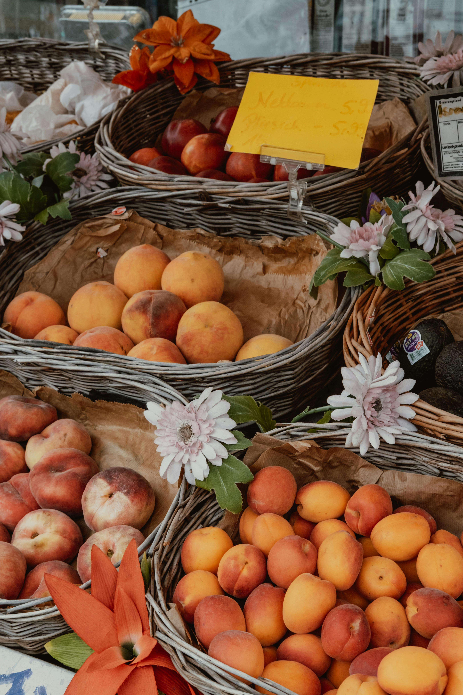
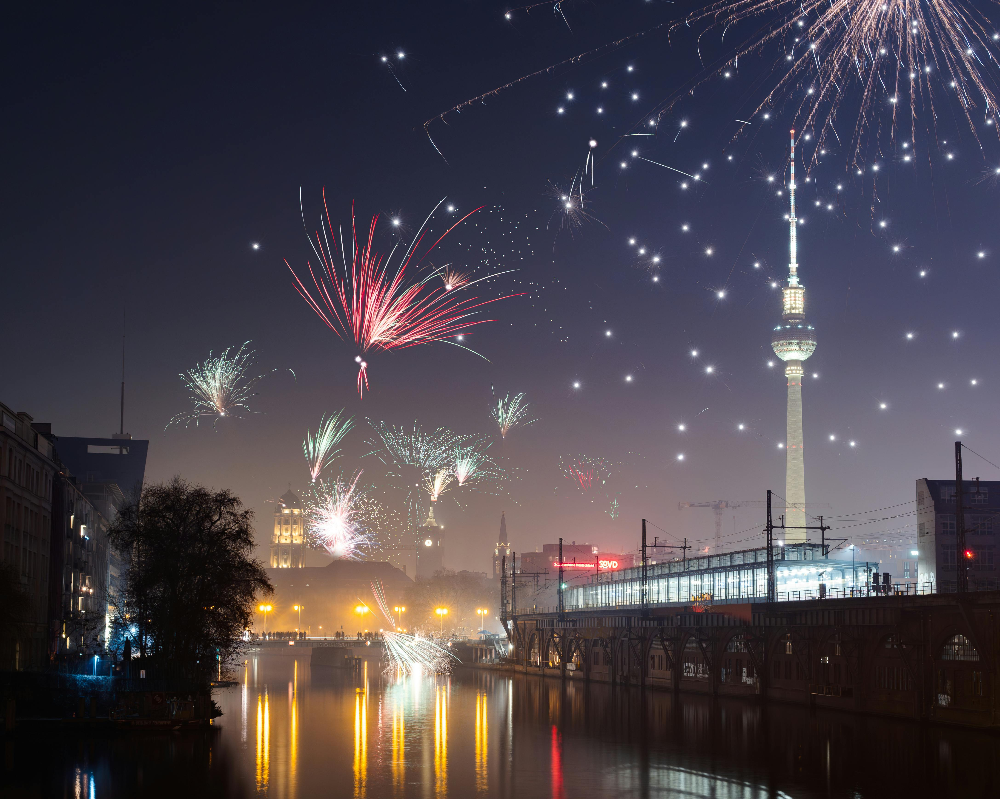
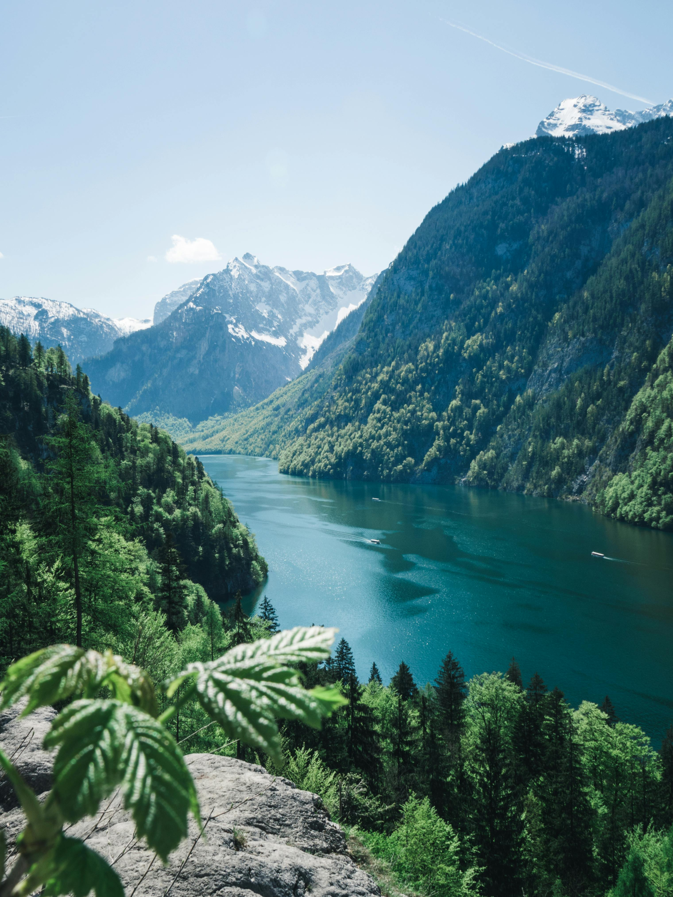
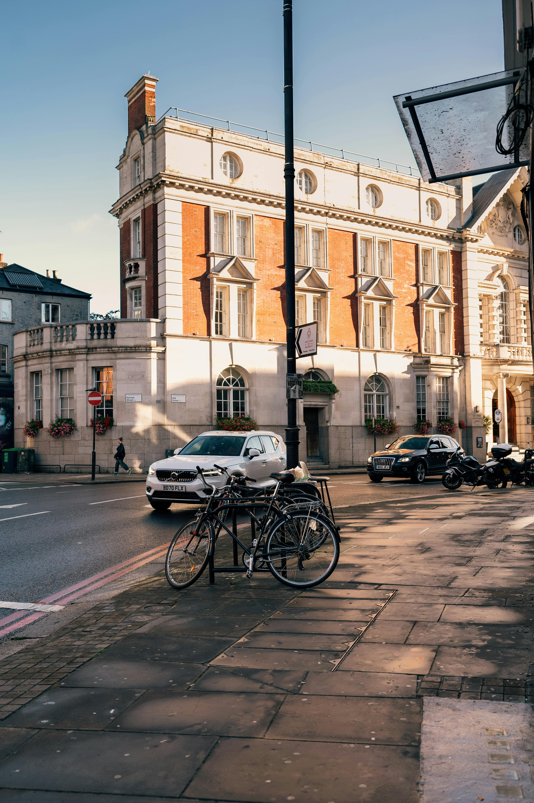
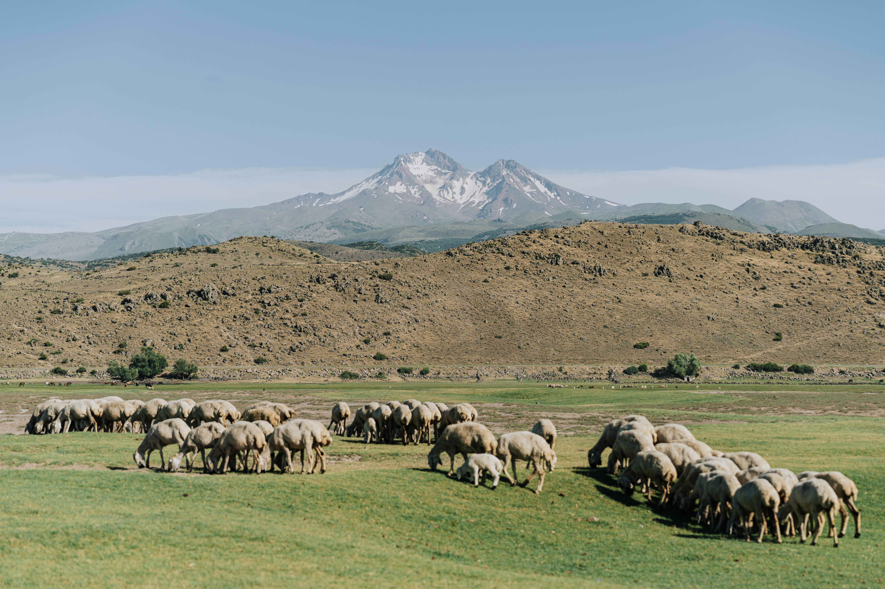
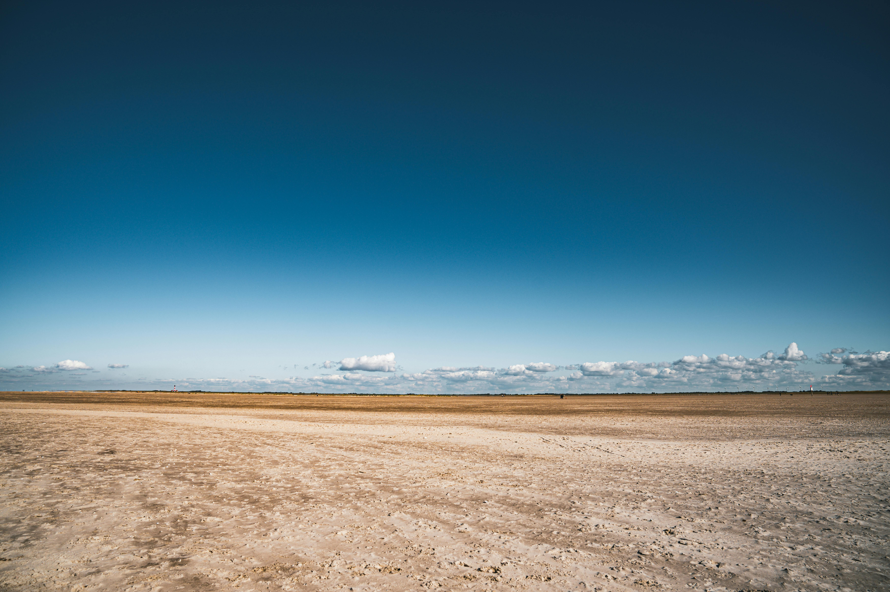

Best Travel Tips

- Best Time to Visit: Spring and fall are ideal for city visits and festivals; winter for Christmas markets and skiing in the Alps.
- Transportation: Germany has an excellent train system, and car rentals are great for exploring the countryside.
- Language: German is the official language, but English is widely spoken, especially in cities.
- Currency: Euro (€); credit cards are commonly accepted, but carrying cash is recommended for smaller towns.
- Health & Safety: Germany is a safe destination with top-tier healthcare; always have travel insurance for peace of mind.
Best Cuisines and Dining Recommendations

- Bratwurst: Grilled sausage served with mustard and bread.
- Sauerbraten: Marinated beef pot roast, a traditional dish.
- Pretzels: Soft, salty baked bread, a German staple.
- Black Forest Cake: Rich chocolate cake with cherries and whipped cream.
- Schnitzel: Breaded and fried meat, often served with potatoes or salad.
Best Accommodation Options

- Luxury Hotels: High-end hotels in cities like Berlin, Munich, and Frankfurt.
- Guesthouses: Traditional inns known as “Gasthaus” in scenic rural areas.
- Vacation Rentals: Apartments and cottages for rent in picturesque towns and cities.
- Hostels: Affordable hostels in major cities, perfect for budget travelers.
Best Local Culture and Traditions

- Oktoberfest: World-famous beer festival held annually in Munich.
- Classical Music: Birthplace of composers like Beethoven and Bach.
- Architecture: A blend of medieval castles, Gothic cathedrals, and modern designs.
- Christmas Markets: Magical holiday markets across the country, especially in Nuremberg and Dresden.
- Autobahn: Germany's famous highway network, some sections with no speed limit.
Best Top Tourist Attractions

- Brandenburg Gate: Iconic landmark in Berlin, symbol of reunification.
- Neuschwanstein Castle: Fairytale-like castle in Bavaria, inspiration for Disney's Sleeping Beauty Castle.
- Cologne Cathedral: Gothic masterpiece and UNESCO World Heritage site.
- Black Forest: Dense forest region with hiking trails and traditional villages.
- Berlin Wall Memorial: Historic site and museum detailing the division of Berlin during the Cold War.
Best Transportation Guides

- Public Transport: Efficient train, tram, and bus networks in all major cities.
- Biking: Germany is very bike-friendly, with numerous cycling paths in cities and countryside.
- Car Rentals: Ideal for exploring scenic regions like the Rhine Valley and the Bavarian Alps.
- Airport Transfers: Major airports in Frankfurt, Munich, and Berlin with shuttle services.
Best Outdoor Activities and Adventure

- Hiking: Trails in the Bavarian Alps and Black Forest.
- Skiing: Winter sports in regions like Garmisch-Partenkirchen.
- River Cruises: Explore the Rhine and Moselle rivers on scenic boat tours.
- Cycling: Long-distance bike routes along rivers like the Danube and Elbe.
- Castles Tours: Visit historic castles along Germany’s “Castle Road.”
Best Weather and Best Time to Visit

- Winter (Dec-Feb): Cold, ideal for Christmas markets and skiing.
- Spring (Mar-May): Mild temperatures, perfect for city exploration and hiking.
- Summer (Jun-Aug): Warm and sunny, great for outdoor activities and festivals.
- Autumn (Sep-Nov): Cool weather, great for Oktoberfest and fall foliage in the countryside.